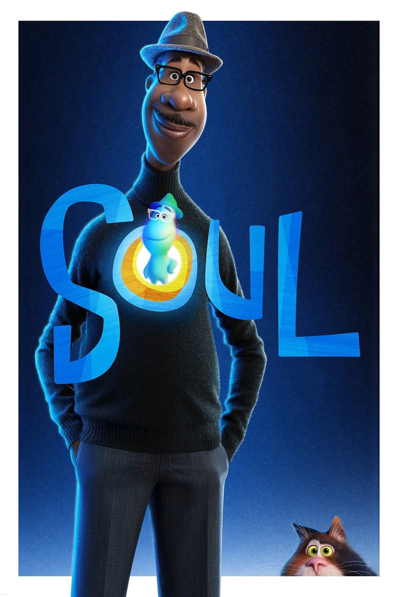

Soul
Anno di uscita: 2020

Per ritrarre accuratamente la cultura afroamericana all'interno del film, la Pixar ha creato un trust culturale interno composto da dipendenti Pixar neri e i realizzatori hanno assunto diversi consulenti con i quali hanno lavorato a stretto contatto durante lo sviluppo del film; tra loro c'erano diversi dipendenti della Pixar, i musicisti Herbie Hancock, Terri Lyne Carrington, Quincy Jones e Jon Batiste, l'educatrice Johnnetta Cole e le star Questlove e Daveed Diggs.
Trama:
Joe Gardner è un insegnante di scuola media con la passione per il jazz. Dopo un'audizione di successo all'Half Note Club, è improvvisamente coinvolto in un incidente che separa la sua anima dal corpo e lo trasporta al Seminario delle Anime, un centro in cui le anime si sviluppano e acquisiscono passioni prima di essere trasferite in un neonato. Joe deve chiedere aiuto alle altre anime in addestramento, come 22, un'anima che ha trascorso eoni nel Seminario delle Anime, per poter tornare sulla Terra.